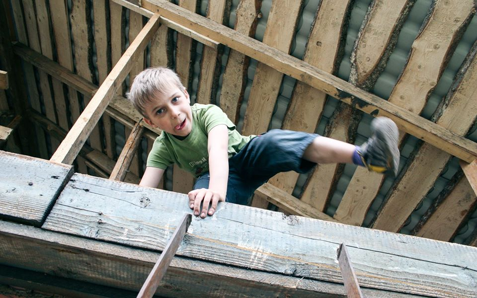

В детстве родители часто брали меня на работу.
Мама работала в банке, а отец водителем КамАЗа в АТП. Мне одинаково нравилось проводить время и там, и там.

С мамой в конце дня я ходил в настоящее денежное хранилище (как у Скруджа Макдака, только без бардака и с поправкой на ижморские объёмы), а с отцом объездил весь Кузбасс (у отца был единственный в Ижморке КамАЗ со спальным местом).
Дружил со взрослыми и в банке и в АТП. С банковским охранником дружил до тех пор, пока он не спросил у меня как-то: «У вас, наверное, и в туалете стены деньгами оклеены?». Охранник, сам того не зная, примерно 10-летнего меня научил скептически относится к пролетариям.
И банковский порядок и романтизм работы водителем и тяга к людям старше меня стали базовыми принципами моей будущей жизни. Считать деньги и водить автомобиль я умею лет с 12.
Может быть это и есть один из вариантов дополнительного образования, а не кружок макраме и студия аквариумистики?
Тебя родители брали на работу?